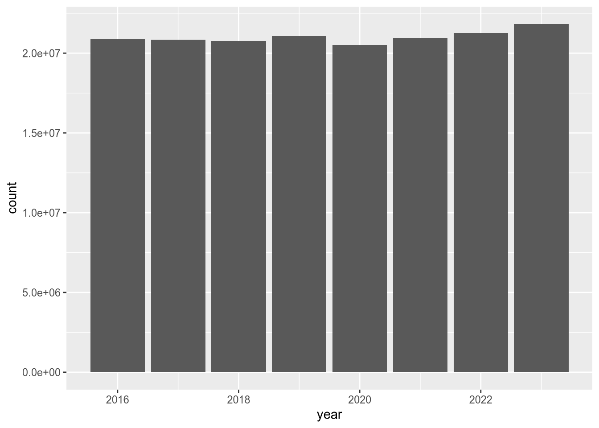
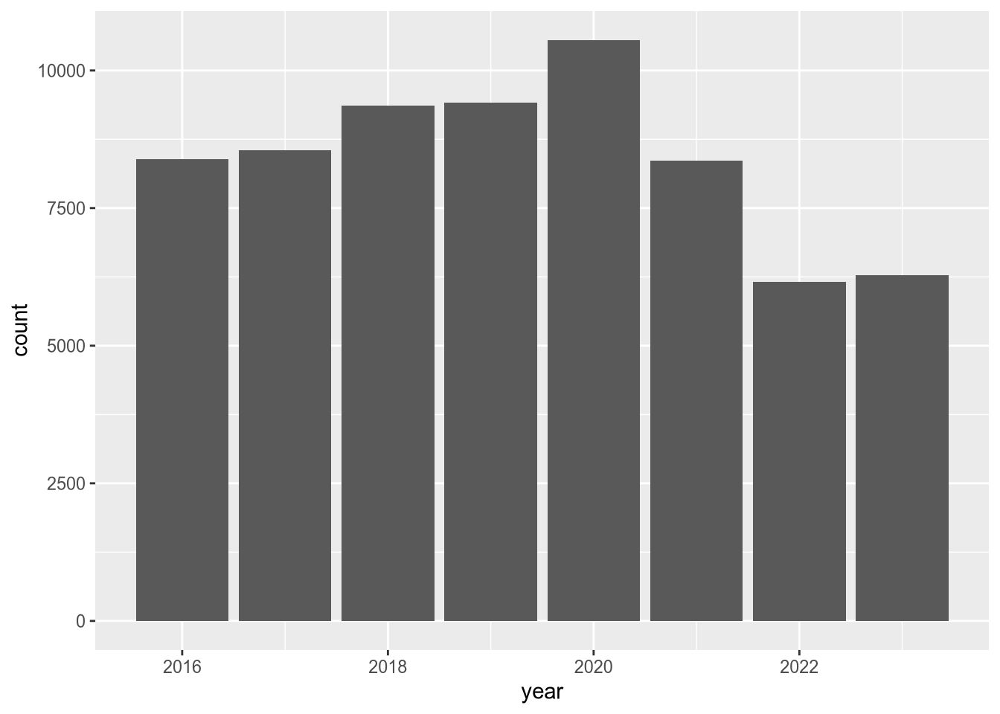

is_negative = function(x) x < 025 Organizing Code
NoteLearning Goals
After this lesson, you should be able to:
- Write functions to organize and encapsulate reusable code
- Create code that only runs when a condition is satisfied
- Identify when a problem requires iteration
- Select appropriate iteration strategies for problems
By now, you’ve learned all of the basic skills necessary to explore a data set in R. The focus of this chapter is how to organize your code so that it’s concise, clear, and easy to automate. This will help you and your collaborators avoid tedious, redundant work, reproduce results efficiently, and run code in specialized environments for scientific computing, such as high-performance computing clusters.
25.1 Functions
The main way to interact with R is by calling functions, which was first explained way back in Section 12.3.4. This section explains how to write your own functions.
NoteThe Parts of a Function
Think of a function as a factory. It takes raw materials, runs them through some machinery, and produces a final product:
Raw materials: the inputs to a function are called arguments. Each argument is assigned to a parameter, a placeholder variable.
Machinery: code in the body of a function computes something from the arguments.
Final product: the output of a function is called the return value.
Functions are building blocks for solving larger problems. Take a divide-and-conquer approach, breaking large problems into smaller steps. Write a short function for each step. This approach makes it easier to:
- Test that each step works correctly.
- Modify, reuse, or repurpose a step.
The function keyword defines a new function. Here’s the syntax:
function(parameter1, parameter2, ...) {
# Your code goes here
# The result goes here
}A function can have any number of parameters, and will automatically return the value of the last line of its body. Generally, when you define a function, you should assign it to a variable, so that you can use it later.
Tip
Choosing descriptive variable names is a good habit. For functions, that means choosing a name that describes what the function does. It often makes sense to use verbs in function names.
For example, let’s create a function that detects negative numbers. It should take a vector of numbers as input, compare them to zero, and then return the logical result from the comparison as output. Here’s the code:
The name of the function, is_negative, describes what the function does and includes a verb. The parameter x is the input. The return value is the result x < 0.
Any time you write a function, the first thing you should do afterwards is test that it actually works. Try the is_negative function out on a few test cases:
is_negative(6)[1] FALSEis_negative(-1.1)[1] TRUEx = c(5, -1, -2, 0, 3)
is_negative(x)[1] FALSE TRUE TRUE FALSE FALSE
Tip
Before you write a function, it’s useful to go through several steps:
Write down what you want to do, in detail. It can also help to draw a picture of what needs to happen.
Check whether there’s already a built-in function. Search online and in the R documentation.
Write the code to handle a simple case first. For data science problems, use a small dataset at this step.
NoteViewing Function Definitions
Almost every command in R is a function, even the arithmetic operators and the parentheses! You can view the definition of a function by typing its name without trailing parentheses (in contrast to how you call functions).
For example, let’s look at the body of the append function, which appends a value to the end of a list or vector:
appendfunction (x, values, after = length(x))
{
lengx <- length(x)
if (!after)
c(values, x)
else if (after >= lengx)
c(x, values)
else c(x[1L:after], values, x[(after + 1L):lengx])
}
<bytecode: 0x55e4e95d6770>
<environment: namespace:base>Don’t worry if you can’t understand everything the append function’s code does yet. It will make more sense later on, after you’ve written a few functions of your own.
Many of R’s built-in functions are not entirely written in R code. You can spot these by calls to the special .Primitive or .Internal functions in their code.
For instance, the sum function is not written in R code:
sumfunction (..., na.rm = FALSE) .Primitive("sum")25.1.1 Example: Getting Largest Values
Let’s write a another function. This one will get the largest values in a vector. The inputs or arguments to the function will be the vector in question and also the number of values to get. Let’s call these vec and n, respectively. The result will be a vector of the n largest elements. Here’s one way to write the function:
get_largest = function(vec, n) {
sorted = sort(vec, decreasing = TRUE)
head(sorted, n)
}The name of the function, get_largest, describes what the function does and includes a verb. If this function will be used frequently, a shorter name, such as largest, might be preferable (compare to the head function).
Try the get_largest function on a few test cases to make sure it works correctly:
x = c(1, 10, 20, -3)
get_largest(x, 2)[1] 20 10get_largest(x, 3)[1] 20 10 1y = c(-1, -2, -3)
get_largest(y, 2)[1] -1 -2z = c("d", "a", "t", "a", "l", "a", "b")
get_largest(z, 3)[1] "t" "l" "d"Notice that the parameters vec and n inside the function do not exist as variables outside of the function:
vecError: object 'vec' not foundIn general, R keeps parameters and variables you define inside of a function separate from variables you define outside of a function. You can read more about the specific rules for how R searches for variables in DataLab’s Intermediate R workshop reader.
As a function for quickly summarizing data, get_largest would be more convenient if the parameter n for the number of values to return was optional (again, compare to the head function). You can make the parameter n optional by setting a default argument: an argument assigned to the parameter if no argument is assigned in the call to the function. You can use = to assign default arguments to parameters when you define a function with the function keyword.
Here’s a new definition of get_largest with the default n = 5:
get_largest = function(vec, n = 5) {
sorted = sort(vec, decreasing = TRUE)
head(sorted, n)
}After making a change, it’s a good idea to test the function again:
get_largest(x)[1] 20 10 1 -3get_largest(y)[1] -1 -2 -3get_largest(z)[1] "t" "l" "d" "b" "a"
NoteThe
return Keyword
We’ve already seen that a function will automatically return the value of its last line. The return keyword causes a function to return a result immediately, without running any subsequent code in its body.
It only makes sense to use return from inside of an if-expression. If your function doesn’t have any if-expressions, you don’t need to use return.
For example, suppose you want the get_largest function to immediately return NULL if the argument for vec is a list. Here’s the code, along with some test cases:
get_largest = function(vec, n = 5) {
if (is.list(vec))
return(NULL)
sorted = sort(vec, decreasing = TRUE)
head(sorted, n)
}
get_largest(x)[1] 20 10 1 -3get_largest(z)[1] "t" "l" "d" "b" "a"get_largest(list(1, 2))NULLAlternatively, you could make the function raise an error by calling the stop function. Whether it makes more sense to return NULL or print an error depends on how you plan to use the get_largest function.
Notice that the last line of the get_largest function still doesn’t use the return keyword. It’s idiomatic to only use return when strictly necessary.
25.1.2 Example: Returning Multiple Values
A function returns one R object, but sometimes computations have multiple results. In that case, return the results in a vector, list, or other data structure.
For example, let’s make a function that computes the mean and median for a vector. We’ll return the results in a named list, although we could also use a named vector:
compute_mean_med = function(x) {
m1 = mean(x)
m2 = median(x)
list(mean = m1, median = m2)
}
compute_mean_med(c(1, 2, 3, 1))$mean
[1] 1.75
$median
[1] 1.5The names make the result easier to understand for the caller of the function, although they certainly aren’t required here.
25.2 Conditional Expressions
Sometimes you’ll need code to do different things, depending on a condition. You can use an if-expression to write conditional code.
For example, suppose you want your code to generate a different greeting depending on an input name:
name = "Nick"
# Default greeting
greeting = "Nice to meet you!"
if (name == "Nick") {
greeting = "Hi Nick, nice to see you again!"
}
greeting[1] "Hi Nick, nice to see you again!"Indent code inside of the if-expression by 2 or 4 spaces. Indentation makes your code easier to read.
Warning
The condition in an if-expression has to have length 1:
name = c("Nick", "Susan")
# Default greeting
greeting = "Nice to meet you!"
if (name == "Nick") {
greeting = "Hi Nick, nice to see you again!"
}Error in if (name == "Nick") {: the condition has length > 1Use the else keyword if you want to add an alternative when the condition is FALSE. So the previous code can also be written as:
name = "Nick"
if (name == "Nick") {
greeting = "Hi Nick, nice to see you again!"
} else {
# Default greeting
greeting = "Nice to meet you!"
}
greeting[1] "Hi Nick, nice to see you again!"Use else if with a condition if you want to add an alternative to the first condition that also has its own condition. Only the first case where a condition is TRUE will run. You can use else if as many times as you want, and can also use else. For example:
name = "Susan"
if (name == "Nick") {
greeting = "Hi Nick, nice to see you again!"
} else if (name == "Peter") {
greeting = "Go away Peter, I'm busy!"
} else {
greeting = "Nice to meet you!"
}
greeting[1] "Nice to meet you!"You can create compound conditions with R’s logic operators !, &, and | (see Section 15.4). For example:
name1 = "Wesley"
name2 = "Nick"
if (name1 == "Wesley" & name2 == "Nick") {
greeting = "These are the authors."
} else {
greeting = "Who are these people?!"
}
greeting[1] "These are the authors."You can write an if-statement inside of another if-statement. This is called nesting if-statements. Nesting is useful when you want to check a condition, do some computations, and then check another condition under the assumption that the first condition was True.
Tip
If-statements correspond to special cases in your code. Lots of special cases in code makes the code harder to understand and maintain. If you find yourself using lots of if-statements, especially nested if-statements, consider whether there is a more general strategy or way to write the code.
25.3 Iteration
R is powerful tool for automating tasks that have repetitive steps. For example, you can:
- Apply a transformation to an entire column of data.
- Compute distances between all pairs from a set of points.
- Read a large collection of files from disk in order to combine and analyze the data they contain.
- Simulate how a system evolves over time from a specific set of starting parameters.
- Scrape data from the pages of a website.
You can implement concise, efficient solutions for these kinds of tasks in R by using iteration, which means repeating a computation many times. R provides four different strategies for writing iterative code:
- Vectorization, where a function is implicitly called on each element of a vector. This was introduced in Section 13.1.3.
- Apply functions, where a function is explicitly called on each element of a data structure. This was introduced in Section 17.1.
- Loops, where an expression is evaluated repeatedly until some condition is met.
- Recursion, where a function calls itself.
Vectorization is the most efficient and concise iteration strategy, but also the least flexible, because it only works with specific functions and with vectors. Apply functions are more flexible—they work with any function and any data structure with elements—but less efficient and less concise. Loops and recursion provide the most flexibility but are the least concise. Recursion tends to be the least efficient iteration strategy in R.
The rest of this section explains how to write loops and how to choose which iteration strategy to use. We assume you’re already comfortable with vectorization and have at least some familiarity with apply functions.
25.3.1 For-Loops
A for-loop evaluates the expressions in its body once for each element of a data structure. The syntax of a for-loop is:
# DATA is the data structure
#
# X is one element of DATA, assigned automatically at the beginning of each
# iteration
#
for (X in DATA) {
# Expression(s) to repeat.
}For example, to print out all the column names of the terns data, you can write:
for (name in names(terns)) {
message(name)
}yearsite_namesite_name_2013_2018site_name_1988_2001site_abbrregion_3region_4eventbp_minbp_maxfl_minfl_maxtotal_nestsnonpred_eggsnonpred_chicksnonpred_flnonpred_adpred_controlpred_eggspred_chickspred_flpred_adpred_pefapred_coy_foxpred_mesopred_owlspppred_corvidpred_other_raptorpred_other_avianpred_misctotal_pefatotal_coy_foxtotal_mesototal_owlspptotal_corvidtotal_other_raptortotal_other_aviantotal_miscfirst_observedlast_observedfirst_nestfirst_chickfirst_fledgeWithin the body of a for-loop, you can compute values, check conditions, etc.
Oftentimes you’ll want to save the result of the code you perform within a for-loop. The easiest way to do this is by creating an empty vector and using c or append to append values to it:
values = c(10, 12, 11, 2, 3)
diffs = c()
for (i in seq(1, length(values) - 1)) {
a = values[[i]]
b = values[[i + 1]]
diffs = append(diffs, a - b)
}
diffs[1] -2 1 9 -1This example is just for demonstration, since R’s built-in diff function is a much more concise and efficient way to compute differences. The point is that when you use a loop, you have to create a data structure to store the results yourself.
Warning
Appending values to a vector, as in the example, is quite inefficient. If you need to use a loop to produce a lot of results (say, more than 100):
- Before the loop, create a result vector that’s the expected length of the final result. Fill vector with 0s or some other placeholder value. You can use functions such as
integer,numeric, andcharacterto do this. - In the loop, use indexing to replace the elements of the result vector as they’re computed.
Using this strategy, which is called pre-allocation the code in the example becomes:
values = c(10, 12, 11, 2, 3)
diffs = integer(length(values) - 1)
for (i in seq(1, length(values) - 1)) {
a = values[[i]]
b = values[[i + 1]]
diffs[[i]] = a - b
}
diffs[1] -2 1 9 -125.3.2 Planning for Iteration
At first it might seem difficult to decide if and what kind of iteration to use. Start by thinking about whether you need to do something over and over. If you don’t, then you probably don’t need to use iteration. If you do, then try iteration strategies in this order:
- Vectorization
- Apply functions (or the purrr package’s
mapfunctions)- Try an apply function if iterations are independent.
- Loops
- Try a for-loop if some iterations depend on others.
- Recursion (which isn’t covered here)
- Convenient for naturally recursive tasks (like Fibonacci), but often there are faster solutions.
Start by writing the code for just one iteration. Make sure that code works; it’s easy to test code for one iteration.
When you have one iteration working, then try using the code with an iteration strategy (you will have to make some small changes). If it doesn’t work, try to figure out which iteration is causing the problem. One way to do this is to use message to print out information. Then try to write the code for the broken iteration, get that iteration working, and repeat this whole process.
25.4 Case Study: CA Hospital Utilization
The California Department of Health Care Access and Information (HCAI) requires hospitals in the state to submit detailed information each year about how many beds they have and the total number of days for which each bed was occupied. The HCAI publishes the data to the California Open Data Portal. Let’s use R to read data from 2016 to 2023 and investigate whether hospital utilization is noticeably different in and after 2020.
The data set consists of a separate Microsoft Excel file for each year. Before 2018, HCAI used a data format (in Excel) called ALIRTS. In 2018, they started collecting more data and switched to a data format called SIERA. The 2018 data file contains a crosswalk that shows the correspondence between SIERA columns and ALIRTS columns.
Important
Click here to download the CA Hospital Utilization data set (8 Excel files).
If you haven’t already, we recommend you create a directory for this workshop. In your workshop directory, create a data/ca_hospitals subdirectory. Download and save the data set in the data/ca_hospitals subdirectory.
When you need to solve a programming problem, get started by writing some comments that describe the problem, the inputs, and the expected output. Try to be concrete. This will help you clarify what you’re trying to achieve and serve as a guiding light while you work.
As a programmer (or any kind of problem-solver), you should always be on the lookout for ways to break problems into smaller, simpler steps. Think about this when you frame a problem. Small steps are easier to reason about, implement, and test. When you complete one, you also get a nice sense of progress towards your goal.
For the CA Hospital Utilization data set, our goal is to investigate whether there was a change in hospital utilization in 2020. Before we can do any investigation, we need to read the files into R. The files all contain tabular data and have similar formats, so let’s try to combine them into a single data frame. We’ll say this in the framing comments:
# Read the CA Hospital Utilization data set into R. The inputs are yearly Excel
# files (2016-2023) that need to be combined. The pre-2018 files have a
# different format from the others. The result should be a single data frame
# with information about bed and patient counts.
#
# After reading the data set, we'll investigate utilization in 2020.“Investigate utilization” is a little vague, but for an exploratory data analysis, it’s hard to say exactly what to do until you’ve started working with the data.
We need to read multiple files, but we can simplify the problem by starting with just one. Let’s start with the 2023 data. It’s in an Excel file, which you can read with the read_excel function from the readxl package. If it’s your first time using the readxl package, you’ll need to install it:
install.packages("readxl")The read_excel function requires the path to the file as the first argument. You can optionally provide the sheet name or number (starting from 1) as the second argument. Open up the Excel file in your computer’s spreadsheet program and take a look. There are multiple sheets, and the data about beds and patients are in the second sheet. Back in R, read just the second sheet:
library("readxl")
path = "data/ca_hospitals/hosp23_util_data_final.xlsx"
sheet = read_excel(path, sheet = 2)New names:
• `` -> `...355`head(sheet)# A tibble: 6 × 355
Description FAC_NO FAC_NAME FAC_STR_ADDR FAC_CITY FAC_ZIP FAC_PHONE
<chr> <chr> <chr> <chr> <chr> <chr> <chr>
1 FINAL 2023 UTILIZATIO… FINAL… FINAL 2… FINAL 2023 … FINAL 2… FINAL … FINAL 20…
2 Page 1.0 1.0 1.0 1.0 1.0 1.0
3 Column 1.0 1.0 1.0 1.0 1.0 1.0
4 Line 2.0 1.0 3.0 4.0 5.0 6.0
5 <NA> 10601… ALAMEDA… 2070 CLINTO… ALAMEDA 94501 51023337…
6 <NA> 10601… ALTA BA… 2450 ASHBY … BERKELEY 94705 510-655-…
# ℹ 348 more variables: FAC_ADMIN_NAME <chr>, FAC_OPERATED_THIS_YR <chr>,
# FAC_OP_PER_BEGIN_DT <chr>, FAC_OP_PER_END_DT <chr>,
# FAC_PAR_CORP_NAME <chr>, FAC_PAR_CORP_BUS_ADDR <chr>,
# FAC_PAR_CORP_CITY <chr>, FAC_PAR_CORP_STATE <chr>, FAC_PAR_CORP_ZIP <chr>,
# REPT_PREP_NAME <chr>, SUBMITTED_DT <chr>, REV_REPT_PREP_NAME <chr>,
# REVISED_DT <chr>, CORRECTED_DT <chr>, LICENSE_NO <chr>,
# LICENSE_EFF_DATE <chr>, LICENSE_EXP_DATE <chr>, LICENSE_STATUS <chr>, …The first four rows contain metadata about the columns. The first hospital, Alameda Hospital, is listed in the fifth row. So let’s remove the first four rows:
sheet = sheet[-(1:4), ]
head(sheet)# A tibble: 6 × 355
Description FAC_NO FAC_NAME FAC_STR_ADDR FAC_CITY FAC_ZIP FAC_PHONE
<chr> <chr> <chr> <chr> <chr> <chr> <chr>
1 <NA> 106010735 ALAMEDA HOSPITAL 2070 CLINTO… ALAMEDA 94501 51023337…
2 <NA> 106010739 ALTA BATES SUMM… 2450 ASHBY … BERKELEY 94705 510-655-…
3 <NA> 106010776 UCSF BENIOFF CH… 747 52ND ST… OAKLAND 94609 510-428-…
4 <NA> 106010811 FAIRMONT HOSPIT… 15400 FOOTH… SAN LEA… 94578 51043748…
5 <NA> 106010844 ALTA BATES SUMM… 2001 DWIGHT… BERKELEY 94704 510-655-…
6 <NA> 106010846 HIGHLAND HOSPIT… 1411 EAST 3… OAKLAND 94602 51043748…
# ℹ 348 more variables: FAC_ADMIN_NAME <chr>, FAC_OPERATED_THIS_YR <chr>,
# FAC_OP_PER_BEGIN_DT <chr>, FAC_OP_PER_END_DT <chr>,
# FAC_PAR_CORP_NAME <chr>, FAC_PAR_CORP_BUS_ADDR <chr>,
# FAC_PAR_CORP_CITY <chr>, FAC_PAR_CORP_STATE <chr>, FAC_PAR_CORP_ZIP <chr>,
# REPT_PREP_NAME <chr>, SUBMITTED_DT <chr>, REV_REPT_PREP_NAME <chr>,
# REVISED_DT <chr>, CORRECTED_DT <chr>, LICENSE_NO <chr>,
# LICENSE_EFF_DATE <chr>, LICENSE_EXP_DATE <chr>, LICENSE_STATUS <chr>, …Some data sets also have metadata in the last rows, so let’s check for that here:
tail(sheet)# A tibble: 6 × 355
Description FAC_NO FAC_NAME FAC_STR_ADDR FAC_CITY FAC_ZIP FAC_PHONE
<chr> <chr> <chr> <chr> <chr> <chr> <chr>
1 <NA> 106574010 SUTTER DAVIS HO… 2000 SUTTER… DAVIS 95616 (530) 75…
2 <NA> 106580996 ADVENTIST HEALT… 726 FOURTH … MARYSVI… 95901 530-751-…
3 <NA> 206100718 COMMUNITY SUBAC… 3003 NORTH … FRESNO 93703 559-459-…
4 <NA> 206274027 WESTLAND HOUSE 100 BARNET … MONTEREY 93940 83162453…
5 <NA> 206351814 HAZEL HAWKINS M… 900 SUNSET … HOLLIST… 95023 831-635-…
6 <NA> <NA> n = 506 <NA> <NA> <NA> <NA>
# ℹ 348 more variables: FAC_ADMIN_NAME <chr>, FAC_OPERATED_THIS_YR <chr>,
# FAC_OP_PER_BEGIN_DT <chr>, FAC_OP_PER_END_DT <chr>,
# FAC_PAR_CORP_NAME <chr>, FAC_PAR_CORP_BUS_ADDR <chr>,
# FAC_PAR_CORP_CITY <chr>, FAC_PAR_CORP_STATE <chr>, FAC_PAR_CORP_ZIP <chr>,
# REPT_PREP_NAME <chr>, SUBMITTED_DT <chr>, REV_REPT_PREP_NAME <chr>,
# REVISED_DT <chr>, CORRECTED_DT <chr>, LICENSE_NO <chr>,
# LICENSE_EFF_DATE <chr>, LICENSE_EXP_DATE <chr>, LICENSE_STATUS <chr>, …Sure enough, the last row contains what appears to be a count of the hospitals rather than a hospital. Let’s remove it by calling head with a negative number of elements, which removes that many elements from the end:
sheet = head(sheet, -1)
tail(sheet)# A tibble: 6 × 355
Description FAC_NO FAC_NAME FAC_STR_ADDR FAC_CITY FAC_ZIP FAC_PHONE
<chr> <chr> <chr> <chr> <chr> <chr> <chr>
1 <NA> 106571086 WOODLAND MEMORI… 1325 COTTON… WOODLAND 95695 (530) 66…
2 <NA> 106574010 SUTTER DAVIS HO… 2000 SUTTER… DAVIS 95616 (530) 75…
3 <NA> 106580996 ADVENTIST HEALT… 726 FOURTH … MARYSVI… 95901 530-751-…
4 <NA> 206100718 COMMUNITY SUBAC… 3003 NORTH … FRESNO 93703 559-459-…
5 <NA> 206274027 WESTLAND HOUSE 100 BARNET … MONTEREY 93940 83162453…
6 <NA> 206351814 HAZEL HAWKINS M… 900 SUNSET … HOLLIST… 95023 831-635-…
# ℹ 348 more variables: FAC_ADMIN_NAME <chr>, FAC_OPERATED_THIS_YR <chr>,
# FAC_OP_PER_BEGIN_DT <chr>, FAC_OP_PER_END_DT <chr>,
# FAC_PAR_CORP_NAME <chr>, FAC_PAR_CORP_BUS_ADDR <chr>,
# FAC_PAR_CORP_CITY <chr>, FAC_PAR_CORP_STATE <chr>, FAC_PAR_CORP_ZIP <chr>,
# REPT_PREP_NAME <chr>, SUBMITTED_DT <chr>, REV_REPT_PREP_NAME <chr>,
# REVISED_DT <chr>, CORRECTED_DT <chr>, LICENSE_NO <chr>,
# LICENSE_EFF_DATE <chr>, LICENSE_EXP_DATE <chr>, LICENSE_STATUS <chr>, …There are a lot of columns in sheet, so let’s make a list of just a few that we’ll use for analysis. We’ll keep:
- Columns with facility name, location, and operating status
- All of the columns whose names start with
TOT, because these are totals for number of beds, number of census-days, and so on. - Columns about acute respiratory beds, with names that contain
RESPIRATORY, because they might also be relevant.
We can use the stringr package, which provides string processing functions, to help us get the TOT and RESPIRATORY column names. If it’s your first time using the stringr package, you’ll have to install it:
install.packages("stringr")We can use stringr’s str_starts function to check whether column names start with TOT and its str_detect function to check whether column names contain RESPIRATORY:
library("stringr")
facility_cols = c(
"FAC_NAME", "FAC_CITY", "FAC_ZIP", "FAC_OPERATED_THIS_YR", "FACILITY_LEVEL",
"TEACH_HOSP", "COUNTY", "PRIN_SERVICE_TYPE"
)
cols = names(sheet)
tot_cols = cols[str_starts(cols, "TOT")]
respiratory_cols = cols[str_detect(cols, "RESPIRATORY")]The TOT and RESPIRATORY columns all contain numbers, but the element type is character, so let’s cast to numbers them with as.numeric. We’ll also add a column with the year:
numeric_cols = c(tot_cols, respiratory_cols)
sheet[numeric_cols] = lapply(sheet[numeric_cols], as.numeric)
sheet$year = 2023Now we’ll select only the columns we identified as useful:
sheet = sheet[c("year", facility_cols, numeric_cols)]
head(sheet)# A tibble: 6 × 22
year FAC_NAME FAC_CITY FAC_ZIP FAC_OPERATED_THIS_YR FACILITY_LEVEL TEACH_HOSP
<dbl> <chr> <chr> <chr> <chr> <chr> <chr>
1 2023 ALAMEDA… ALAMEDA 94501 Yes Parent Facili… No
2 2023 ALTA BA… BERKELEY 94705 Yes Parent Facili… No
3 2023 UCSF BE… OAKLAND 94609 Yes Parent Facili… No
4 2023 FAIRMON… SAN LEA… 94578 Yes Consolidated … No
5 2023 ALTA BA… BERKELEY 94704 Yes Consolidated … No
6 2023 HIGHLAN… OAKLAND 94602 Yes Parent Facili… No
# ℹ 15 more variables: COUNTY <chr>, PRIN_SERVICE_TYPE <chr>,
# TOT_LIC_BEDS <dbl>, TOT_LIC_BED_DAYS <dbl>, TOT_DISCHARGES <dbl>,
# TOT_CEN_DAYS <dbl>, TOT_ALOS_CY <dbl>, TOT_ALOS_PY <dbl>,
# ACUTE_RESPIRATORY_CARE_LIC_BEDS <dbl>,
# ACUTE_RESPIRATORY_CARE_LIC_BED_DAYS <dbl>,
# ACUTE_RESPIRATORY_CARE_DISCHARGES <dbl>,
# ACUTE_RESPIRATORY_CARE_INTRA_TRANSFERS <dbl>, …Lowercase names are easier to type, so let’s also make all of the names lowercase with stringr’s str_to_lower function:
names(sheet) = str_to_lower(names(sheet))
head(sheet)# A tibble: 6 × 22
year fac_name fac_city fac_zip fac_operated_this_yr facility_level teach_hosp
<dbl> <chr> <chr> <chr> <chr> <chr> <chr>
1 2023 ALAMEDA… ALAMEDA 94501 Yes Parent Facili… No
2 2023 ALTA BA… BERKELEY 94705 Yes Parent Facili… No
3 2023 UCSF BE… OAKLAND 94609 Yes Parent Facili… No
4 2023 FAIRMON… SAN LEA… 94578 Yes Consolidated … No
5 2023 ALTA BA… BERKELEY 94704 Yes Consolidated … No
6 2023 HIGHLAN… OAKLAND 94602 Yes Parent Facili… No
# ℹ 15 more variables: county <chr>, prin_service_type <chr>,
# tot_lic_beds <dbl>, tot_lic_bed_days <dbl>, tot_discharges <dbl>,
# tot_cen_days <dbl>, tot_alos_cy <dbl>, tot_alos_py <dbl>,
# acute_respiratory_care_lic_beds <dbl>,
# acute_respiratory_care_lic_bed_days <dbl>,
# acute_respiratory_care_discharges <dbl>,
# acute_respiratory_care_intra_transfers <dbl>, …We’ve successfully read one of the files! Since the 2018-2023 files all have the same format, it’s likely that we can use almost the same code for all of them. Any time you want to reuse code, it’s a sign that you should write a function, so that’s what we’ll do. We’ll take all of the code we have so far and put it in the body of a function called read_hospital_data, adding some comments to indicate the steps:
read_hospital_data = function() {
# Read the 2nd sheet of the file.
path = "data/ca_hospitals/hosp23_util_data_final.xlsx"
sheet = read_excel(path, sheet = 2)
# Remove the first 4 and last row.
sheet = sheet[-(1:4), ]
sheet = head(sheet, -1)
# Select only a few columns of interest.
facility_cols = c(
"FAC_NAME", "FAC_CITY", "FAC_ZIP", "FAC_OPERATED_THIS_YR",
"FACILITY_LEVEL", "TEACH_HOSP", "COUNTY", "PRIN_SERVICE_TYPE"
)
cols = names(sheet)
tot_cols = cols[str_starts(cols, "TOT")]
respiratory_cols = cols[str_detect(cols, "RESPIRATORY")]
numeric_cols = c(tot_cols, respiratory_cols)
sheet[numeric_cols] = lapply(sheet[numeric_cols], as.numeric)
sheet$year = 2023
sheet = sheet[c("year", facility_cols, numeric_cols)]
# Rename the columns to lowercase.
names(sheet) = str_to_lower(names(sheet))
sheet
}As it is, the function still only reads the 2023 file. The other files have different paths, so the first thing we need to do is make the path variable a parameter. We’ll also make a year parameter, for the year value inserted as a column:
read_hospital_data = function(path, year) {
# Read the 2nd sheet of the file.
sheet = read_excel(path, sheet = 2)
# Remove the first 4 and last row.
sheet = sheet[-(1:4), ]
sheet = head(sheet, -1)
# Select only a few columns of interest.
facility_cols = c(
"FAC_NAME", "FAC_CITY", "FAC_ZIP", "FAC_OPERATED_THIS_YR",
"FACILITY_LEVEL", "TEACH_HOSP", "COUNTY", "PRIN_SERVICE_TYPE"
)
cols = names(sheet)
tot_cols = cols[str_starts(cols, "TOT")]
respiratory_cols = cols[str_detect(cols, "RESPIRATORY")]
numeric_cols = c(tot_cols, respiratory_cols)
sheet[numeric_cols] = lapply(sheet[numeric_cols], as.numeric)
sheet$year = year
sheet = sheet[c("year", facility_cols, numeric_cols)]
# Rename the columns to lowercase.
names(sheet) = str_to_lower(names(sheet))
sheet
}Test the function out on a few of the files to make sure it works correctly:
head(
read_hospital_data(
"data/ca_hospitals/hosp23_util_data_final.xlsx", 2023
)
)New names:
• `` -> `...355`# A tibble: 6 × 22
year fac_name fac_city fac_zip fac_operated_this_yr facility_level teach_hosp
<dbl> <chr> <chr> <chr> <chr> <chr> <chr>
1 2023 ALAMEDA… ALAMEDA 94501 Yes Parent Facili… No
2 2023 ALTA BA… BERKELEY 94705 Yes Parent Facili… No
3 2023 UCSF BE… OAKLAND 94609 Yes Parent Facili… No
4 2023 FAIRMON… SAN LEA… 94578 Yes Consolidated … No
5 2023 ALTA BA… BERKELEY 94704 Yes Consolidated … No
6 2023 HIGHLAN… OAKLAND 94602 Yes Parent Facili… No
# ℹ 15 more variables: county <chr>, prin_service_type <chr>,
# tot_lic_beds <dbl>, tot_lic_bed_days <dbl>, tot_discharges <dbl>,
# tot_cen_days <dbl>, tot_alos_cy <dbl>, tot_alos_py <dbl>,
# acute_respiratory_care_lic_beds <dbl>,
# acute_respiratory_care_lic_bed_days <dbl>,
# acute_respiratory_care_discharges <dbl>,
# acute_respiratory_care_intra_transfers <dbl>, …head(
read_hospital_data(
"data/ca_hospitals/hosp21_util_data_final-revised-06.15.2023.xlsx", 2021
)
)# A tibble: 6 × 22
year fac_name fac_city fac_zip fac_operated_this_yr facility_level teach_hosp
<dbl> <chr> <chr> <chr> <chr> <chr> <chr>
1 2021 ALAMEDA… ALAMEDA 94501 Yes Parent Facili… No
2 2021 ALTA BA… BERKELEY 94705 Yes Parent Facili… No
3 2021 UCSF BE… OAKLAND 94609 Yes Parent Facili… No
4 2021 FAIRMON… SAN LEA… 94578 Yes Consolidated … No
5 2021 ALTA BA… BERKELEY 94704 Yes Consolidated … No
6 2021 HIGHLAN… OAKLAND 94602 Yes Parent Facili… No
# ℹ 15 more variables: county <chr>, prin_service_type <chr>,
# tot_lic_beds <dbl>, tot_lic_bed_days <dbl>, tot_discharges <dbl>,
# tot_cen_days <dbl>, tot_alos_cy <dbl>, tot_alos_py <dbl>,
# acute_respiratory_care_lic_beds <dbl>,
# acute_respiratory_care_lic_bed_days <dbl>,
# acute_respiratory_care_discharges <dbl>,
# acute_respiratory_care_intra_transfers <dbl>, …The function appears to work correctly for two of the files, so let’s work towards trying it on all of the 2018-2023 files. We can use the built-in list.files function to get the paths to the files by setting full.names = TRUE (otherwise it just returns the names of the files):
paths = list.files("data/ca_hospitals/", full.names = TRUE)
paths[1] "data/ca_hospitals//hosp16_util_data_final.xlsx"
[2] "data/ca_hospitals//hosp17_util_data_final.xlsx"
[3] "data/ca_hospitals//hosp18_util_data_final.xlsx"
[4] "data/ca_hospitals//hosp19_util_data_final.xlsx"
[5] "data/ca_hospitals//hosp20_util_data_final-revised-06.15.2023.xlsx"
[6] "data/ca_hospitals//hosp21_util_data_final-revised-06.15.2023.xlsx"
[7] "data/ca_hospitals//hosp22_util_data_final_revised_11.28.2023.xlsx"
[8] "data/ca_hospitals//hosp23_util_data_final.xlsx" In addition to the file paths, we also need the year for each file. Fortunately, the last two digits of the year are included in each file’s name. We can write a function to get these. We’ll use R’s built-in basename function to get the file names from the paths, and stringr’s str_sub function to get a substring (the year) from the name:
get_hospital_year = function(path) {
name = basename(path)
year = str_sub(name, 5, 6)
as.integer(year) + 2000
}
get_hospital_year(paths[1])[1] 2016With that done, we need to read the pre-2018 files. In the 2018 file, the fourth sheet is a crosswalk that shows which columns in the pre-2018 files correspond to columns in the later files. Let’s write some code to read the crosswalk. First, read the sheet:
path = "data/ca_hospitals/hosp18_util_data_final.xlsx"
cwalk = read_excel(path, sheet = 4)
head(cwalk)# A tibble: 6 × 6
Page Line Column `SIERA Dataset Header (2018)` ALIRTS Dataset Header…¹ Notes
<dbl> <dbl> <dbl> <chr> <chr> <chr>
1 1 1 1 FAC_NAME FAC_NAME <NA>
2 1 2 1 FAC_NO OSHPD_ID <NA>
3 1 3 1 FAC_STR_ADDR <NA> Addr…
4 1 4 1 FAC_CITY FAC_CITY <NA>
5 1 5 1 FAC_ZIP FAC_ZIPCODE <NA>
6 1 6 1 FAC_PHONE FAC_PHONE <NA>
# ℹ abbreviated name: ¹`ALIRTS Dataset Header (2017)`The new and old column names are in the fourth and fifth columns, respectively, so we’ll get just those:
cwalk = cwalk[, 4:5]
head(cwalk)# A tibble: 6 × 2
`SIERA Dataset Header (2018)` `ALIRTS Dataset Header (2017)`
<chr> <chr>
1 FAC_NAME FAC_NAME
2 FAC_NO OSHPD_ID
3 FAC_STR_ADDR <NA>
4 FAC_CITY FAC_CITY
5 FAC_ZIP FAC_ZIPCODE
6 FAC_PHONE FAC_PHONE Finally, let’s turn the cwalk data frame into a named vector. We’ll make the old column names the names and the new column names the elements. This way we can easily look up the new name for any of the old columns by indexing. Some of the column names in cwalk have extra spaces at the end, so we’ll use stringr’s str_trim function to remove them:
cwalk_names = str_trim(cwalk[[2]])
cwalk = str_trim(cwalk[[1]])
names(cwalk) = cwalk_names
head(cwalk) FAC_NAME OSHPD_ID <NA> FAC_CITY FAC_ZIPCODE
"FAC_NAME" "FAC_NO" "FAC_STR_ADDR" "FAC_CITY" "FAC_ZIP"
FAC_PHONE
"FAC_PHONE" We can now define a new version of the read_hospital_data function that uses the crosswalk to change the column names when year < 2018. Let’s also change function to exclude columns with ALOS in the name, because they have no equivalent in the pre-2018 files:
read_hospital_data = function(path, year) {
# Read the 2nd sheet of the file.
sheet = read_excel(path, sheet = 2)
# Remove the first 4 and last row.
sheet = sheet[-(1:4), ]
sheet = head(sheet, -1)
# Fix pre-2018 column names.
if (year < 2018) {
new_names = cwalk[names(sheet)]
new_names[is.na(new_names)] = names(sheet)[is.na(new_names)]
names(sheet) = new_names
}
# Select only a few columns of interest.
facility_cols = c(
"FAC_NAME", "FAC_CITY", "FAC_ZIP", "FAC_OPERATED_THIS_YR",
"FACILITY_LEVEL", "TEACH_HOSP", "COUNTY", "PRIN_SERVICE_TYPE"
)
cols = names(sheet)
tot_cols = cols[str_starts(cols, "TOT")]
respiratory_cols = cols[str_detect(cols, "RESPIRATORY")]
numeric_cols = c(tot_cols, respiratory_cols)
numeric_cols = numeric_cols[!str_detect(numeric_cols, "ALOS")]
sheet[numeric_cols] = lapply(sheet[numeric_cols], as.numeric)
sheet$year = year
sheet = sheet[c("year", facility_cols, numeric_cols)]
# Rename the columns to lowercase.
names(sheet) = str_to_lower(names(sheet))
sheet
}Now we can test the function on all of the files. We’ll use a for-loop to iterate over all of the paths, read the data for each one, and store the result in a list:
hosps = list()
for (i in seq_along(paths)) {
path = paths[[i]]
year = get_hospital_year(path)
hosp = read_hospital_data(path, year)
hosps[[i]] = hosp
}New names:
New names:
New names:
• `PSY_CENS_PATIENT_TOTL` -> `PSY_CENS_PATIENT_TOTL...126`
• `PSY_CENS_PATIENT_TOTL` -> `PSY_CENS_PATIENT_TOTL...130`
• `PSY_CENS_PATIENT_TOTL` -> `PSY_CENS_PATIENT_TOTL...141`length(hosps)[1] 8We can use the do.call and rbind functions to bind the rows, or stack, the list of data frames:
hosps = do.call(rbind, hosps)
head(hosps)# A tibble: 6 × 18
year fac_name fac_city fac_zip fac_operated_this_yr facility_level teach_hosp
<dbl> <chr> <chr> <chr> <chr> <chr> <chr>
1 2016 ALTA BA… BERKELEY 94705 Yes Parent Facili… NO
2 2016 CHILDRE… OAKLAND 94609 Yes Parent Facili… NO
3 2016 THUNDER… OAKLAND 94609 Yes Parent Facili… NO
4 2016 FAIRMON… SAN LEA… 94578 Yes Consolidated … NO
5 2016 ALTA BA… BERKELEY 94704 Yes Consolidated … NO
6 2016 HIGHLAN… OAKLAND 94602 Yes Parent Facili… YES
# ℹ 11 more variables: county <chr>, prin_service_type <chr>,
# tot_lic_beds <dbl>, tot_lic_bed_days <dbl>, tot_discharges <dbl>,
# tot_cen_days <dbl>, acute_respiratory_care_lic_beds <dbl>,
# acute_respiratory_care_lic_bed_days <dbl>,
# acute_respiratory_care_discharges <dbl>,
# acute_respiratory_care_intra_transfers <dbl>,
# acute_respiratory_care_cen_days <dbl>We’ve finally got all of the data in a single data frame!
To begin to address whether hospital utilization changed in 2020, let’s make a bar plot of total census-days:
library("ggplot2")
(
ggplot(hosps) +
aes(x = year, weight = tot_cen_days) +
geom_bar()
)
According to the plot, total census-days was slightly lower in 2020 than in 2019. This is a bit surprising, but it’s possible that California hospitals typically operate close to maximum capacity and were not able to substantially increase the number of beds in 2020 in response to the COVID-19 pandemic. You can use other columns in the data set, such as tot_lic_beds or tot_lic_bed_days, to check this.
Let’s also look at census-days for acute respiratory care:
(
ggplot(hosps) +
aes(x = year, weight = acute_respiratory_care_cen_days) +
geom_bar()
)
In this plot, there’s a clear uptick in census-days in 2020, and then an interesting decrease to below 2019 levels in the years following. Again, you could use other columns in the data set to investigate this further. We’ll end this case study here, having accomplished the difficult task of reading the data and the much easier task of doing a cursory preliminary analysis of the data.